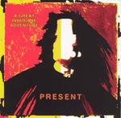

Home Artist links Label link

Present - A Great Inhumane Adventure
| Artist: | Present |
| Title: | A Great Inhumane Adventure |
| Label: | Cuneiform Records Rune 207 |
| Length(s): | 72 minutes |
| Year(s) of release: | 2005 |
| Month of review: | [11/2005] |
Line up
Roger Trigaux - guitar, vocals, keyboards
Reginald Trigaux - guitar, vocals
Dave Kerman - drums, percussion
Pierre Chevalier - roland piano, keyboards
Jean-Pierre Mendes - bass
Keith Macksoud - bass solo on 5
Tracks
| 1) | Delusions | 14.46
|
| 2) | Alone | 10.58
|
| 3) | Le Poison Qui Rend Fou | 10.16
|
| 4) | Laundry Blues | 13.01
|
| 5) | Promenade Au Fond D'Un Canal | 23.33
|
Summary
If there is a band in the RIO genre that I like above all others, then
it must be Present, especially on their later harder albums. The brooding
darkness and overall intensity is something fits me very well for some
reason. Interesting to note that the absolute opposite of the band,
K3, also hails from Belgium. Suggestions on how to get my son hooked
on Present instead of K3 can be sent over the e-mail address listed at the
bottom of this page. Note that this album was recorded in 1998 and
does not include songs from High Infidelity and No. 6.
The music
Delusions leaves no doubt: the style of this band is heavily influenced
by Magma, except that the operatic and jazzy elements of Magma have
lessened somewhat while the overall sound is a bit heavier. Important
in the music is the tangible tension brought to the listener by
repetitive piano runs. The heaviness comes from the rumbling bass and the
guitar. The vocals seem to be both in French and English, the latter somewhat
accented. The guitarwork strongly reminds of the great Crim. An excellent, long and tense opener and characteristic for the band. If you like this, then
you want to hear more of this band, I can assure you.
With Alone we do not tread new territory. Common with the, for me at least,
most likable Cuneiform bands is how the music ranges from fast, funny and playful to the powerful, dark and heavy. On average, this is a slightly
more subdued tune, but the tension isn't much the less for it. This time,
the rock only sets in after six minutes or so, which still leaves
a few minutes of grumbling basswork.
Le Poison Qui Rend Fou is a hectic opener, continued in a waltzy fashion.
The Waltzing Idiot might well have been the title of this song instead.
This is a relatively panicky song in which the guitar is the manic dominating
factor. Do I hear a Crim citation there at the end?
At the start of Laundry Blues we are halfway. This song starts out
tense enough, but soon the music drops out entirely, and we are
left floating in space. The vocals are rather freeform at first (like
Bazquiz but quite a bit lower). There are also some rowdier, more dramatic
vocals that come in a bit later.
Promenade Au Fond D'Un Canal is by far the longest song on this album.
It opens hectically. I guess people familiar with After Crying looking
for a bit more challenge, would be interested in hearing this. The
nervous piano playing, the stopping and starting, the angular
guitarwork, but also the waltzy interludes make for a chamber
orchestra rock which is darker, more threatening than Univers Zero
(which tends to be quite a bit more delicate and classically oriented).
Some of the vocals remind of Bazquiz of Magma, but Bazquiz has
a better, steadier voice. At the end, chaos, slowing down till fade.
Conclusion
This live album is excellent from start to finish, and may be considered
a best of album as well (of course, this does not mean you should stop
at buying the other discs as well). What is offered by Present is a complex
package of dark RIO with obvious links to King Crimson and Magma. But
I actually like Present more than these two stalwarts. The tension is always
high, as if you are watching a thriller movie without the images.
Not to be missed by fans of King Crimson and Magma (assuming that people who like bands such as Djam Karet, 5UU's and Thinking Plague are included among these fans).
© Jurriaan Hage